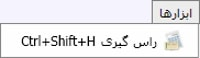
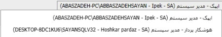
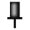
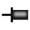

پس از ایجاد ارتباط با پایگاه داده و ورود به نرم افزار صفحه ی زیر را مشاهده کنید:

کادر شماره 1: شامل منوی "فایل، مشاهده و ابزارها" می باشد.
منوی فایل
 برقراری ارتباط جدید (Ctrl + N) :
این گزینه امکان ایجاد ارتباط"پایگاه داده" جدید را برای شما فراهم می نماید.
(در واقع شما می توانید پایگاه داده جدید بر روی همین سیستم ایجاد نمایید.)
برقراری ارتباط جدید (Ctrl + N) :
این گزینه امکان ایجاد ارتباط"پایگاه داده" جدید را برای شما فراهم می نماید.
(در واقع شما می توانید پایگاه داده جدید بر روی همین سیستم ایجاد نمایید.)
قطع ارتباط جاری (Ctrl + D) : این ابزار برای قطع ارتباط با پایگاه داده جاری و نرم افزار مهیاء شده و برای انجام کار با نرم افزار و پایگاه داده مورد نظر لازم است دوباره با آن ارتباط برقرار کنیم.
 بازسازی ارتباط جاری (Ctrl + R) :
شما می توانید زمانی که تغییراتی در نرم افزار ایجاد شده، آن را بازسازی (Refresh) نمایید.
لازم به توضیح است که "بازسازی ارتباط جاری" در صفحات
در حال اجرا تغییرات را نمایش نمی دهد. برای مشاهده تغییرات، لطفا
پنجره های موردنظر را بسته و مجددا آنها را اجرا نمایید.
بازسازی ارتباط جاری (Ctrl + R) :
شما می توانید زمانی که تغییراتی در نرم افزار ایجاد شده، آن را بازسازی (Refresh) نمایید.
لازم به توضیح است که "بازسازی ارتباط جاری" در صفحات
در حال اجرا تغییرات را نمایش نمی دهد. برای مشاهده تغییرات، لطفا
پنجره های موردنظر را بسته و مجددا آنها را اجرا نمایید.
 مدیریت سرور:
توضیحات مرتبط پیشتر ارائه گردیده است.
مدیریت سرور:
توضیحات مرتبط پیشتر ارائه گردیده است.
 تنظیمات:
با کلیک روی این گزینه صفحه
تنظیمات نمایش داده می شود توضیحات مربوط به
ابزار در قسمت راهنمای
صفحه شروع پیشتر توضیح داده شده است.
در صورت نیاز به این صفحه مراجعه کنید.
تنظیمات:
با کلیک روی این گزینه صفحه
تنظیمات نمایش داده می شود توضیحات مربوط به
ابزار در قسمت راهنمای
صفحه شروع پیشتر توضیح داده شده است.
در صورت نیاز به این صفحه مراجعه کنید.
 پشتیبان گیری:
به وسیله این گزینه فراهم شده است.امکان تهیه پشتیبان از اطلاعات پایگاه داده
برای تنظیم مسیر ذخیره سازی فایل پشتیبان صفحه ی
مدیریت سرور را مطالعه فرمایید.
پشتیبان گیری:
به وسیله این گزینه فراهم شده است.امکان تهیه پشتیبان از اطلاعات پایگاه داده
برای تنظیم مسیر ذخیره سازی فایل پشتیبان صفحه ی
مدیریت سرور را مطالعه فرمایید.
 بستن صفحه (Ctrl + Q)/ خروج :
هر فرمی که در
نرم افزار در حال اجرا و نمایش است با کلیک روی گزینه
"بستن صفحه" ببندید.علاوه بر آن باکلیک روی گزینه خروج نیز از
نرم افزار خارج می شوید.
بستن صفحه (Ctrl + Q)/ خروج :
هر فرمی که در
نرم افزار در حال اجرا و نمایش است با کلیک روی گزینه
"بستن صفحه" ببندید.علاوه بر آن باکلیک روی گزینه خروج نیز از
نرم افزار خارج می شوید.
این منو در کنار منوی فایل قرار دارد و دارای گزینه های ذیل می باشد:

 صفحه شروع (Ctrl + H) :
این گزینه به شما امکان نمایش صفحه " شروع نرم افزار" را می دهد.
صفحه شروع (Ctrl + H) :
این گزینه به شما امکان نمایش صفحه " شروع نرم افزار" را می دهد.
 راهنما :
در هر بخشی از نرم افزار با کلیک بر روی این گزینه
امکان استفاده از ابزارهای مربوط به آن به تفصیل توضیح داده شده است.
راهنما :
در هر بخشی از نرم افزار با کلیک بر روی این گزینه
امکان استفاده از ابزارهای مربوط به آن به تفصیل توضیح داده شده است.

برو به صفحه بعد (Alt + Right) :
در صورتی که چندین صفحه در نرم افزار به صورت تب در(Tab) حال اجراست، به کمک این گزینه می توانید صفحات را از راست به چپ مشاهده نمایید.

/ برو به صفحه قبل (Alt + Left) :
در صورتی که چندین صفحه در نرم افزار به صورت تب (Tab)در حال اجراست، شما می توانید، به کمک این گزینه صفحات را از چپ به راست مشاهده نمایید.
 نمایش تمام صفحه (Ctrl + F) :
زمانی که صفحه ای از نرم افزار
در حال اجراست، شما می توانید با کمک ابزار "تمام صفحه"
صفحه مورد نظر را به صورت کامل مشاهده نمایید.
مادامی که صفحه ای از نرم افزار در حال اجراست، این صفحه به صورت تب (Tab)
در صفحه اصلی نرم افزار قابل مشاهده می باشد.
نمایش تمام صفحه (Ctrl + F) :
زمانی که صفحه ای از نرم افزار
در حال اجراست، شما می توانید با کمک ابزار "تمام صفحه"
صفحه مورد نظر را به صورت کامل مشاهده نمایید.
مادامی که صفحه ای از نرم افزار در حال اجراست، این صفحه به صورت تب (Tab)
در صفحه اصلی نرم افزار قابل مشاهده می باشد.

همانگونه که در تصویر فوق مشاهده می کنید
صفحه ی شروع به صورت یک تب در صفحه ی نرم
افزار نشان داده شده است. با انتخاب
نمایش تمام صفحه از منوی نمایش یا زدن علامت
در تصویر ، می توانید صفحه ی مورد نظر را
به صورت پنجره ای جداگانه مشاهده نمایید.
نمایش تمام صفحه ی تب نشان داده شده در تصویر زیر آمده است. روی تصویر با فلش مشخص شده است که در صورت کلیک روی این ناحیه از پنجره، تصویر صفحه به حالت قبل باز می گردد.

در ادامه توضیحات منوی "نمایش" دو گزینه با عناوین"استفاده از منوی آبشاری" و "استفاده از منوی کلاسیک" وجود دارد.

در صورتی که گزینه منوی آبشاری را انتخاب کنید، نمایش ابزار و امکانات نرم افزار به صورت زیر قابل مشاهده می باشد.

 لازم به توضیح است که طراحی پیش فرض نرم
افزار "منوی آبشاری" می باشد
و در تصاویر صفحات راهنمای
نرم افزار از "منوی آبشاری" استفاده شده است.
لازم به توضیح است که طراحی پیش فرض نرم
افزار "منوی آبشاری" می باشد
و در تصاویر صفحات راهنمای
نرم افزار از "منوی آبشاری" استفاده شده است.
در صورتی که از منوی "نمایش" گزینه "منوی کلاسیک" را انتخاب نمایید، لیست ابزارها و امکانات نرم افزار همانند تصویر زیر قابل مشاهده می باشد.

همانگونه که در تصویر فوق مشاهده می کنید در"منوی کلاسیک" عناوین ابزارها و امکانات مربوط به آن قابل مشاهده می باشد. در تصویر فوق نرم افزار"مالی و حسابداری" در حالت انتخاب و نمایش می باشد.
درباره نرم افزار:
این صفحه حاوی اطلاعات کلی درباره نرم افزار می باشد.

دیتابیس ورژن(Database Version) بیانگر نسخه پایگاه داده و علاوه بر آن نسخه به روزرسانی شده نرم افزار برای کاربران محترم قابل مشاهده می باشد. همچنین شما می توانید جهت بهره مندی از خدمات پشتیبانی یا ارتباط با سایر واحدهای شرکت اطلاعات آنها را در صفحه "درباره نرم افزار" مشاهده نمایید .
منوی ابزارها شامل محاسبه "راس گیری" می باشد. نرم افزار سایان این امکان را برای کاربران فراهم کرده تا بتوانند از چک های دریافتنی، پرداختنی و تمامی فاکتورها راس گیری نمایند.
در پنجره راس گیری نمایش داده شده در تصویر ذیل، شما می توانید تاریخ مبدا مورد نظرتان را در کادر بالای پنجره با کلیک روی علامت "..." تعیین نمایید. علاوه بر آن در هر یک از ردیف های صفحه، امکان ثبت تاریخ و مبلغ چک مهیا می باشد. پس از ورود اطلاعات چک و تاریخ هایتان شما می توانید از چک ها راس گیری نمایید. زمان و مبلغ راس گیری شده، در همین پنجره قابل مشاهده می باشد.

 به کمک این ابزار شما می توانید به ردیف های موجود در لیست اضافه کنید .
به کمک این ابزار شما می توانید به ردیف های موجود در لیست اضافه کنید .
 با ابزار ردیف دلخواه را از لیست چک ها حذف نمایید .
با ابزار ردیف دلخواه را از لیست چک ها حذف نمایید .
کادر شماره 2: عناوین فوق، مشخصات پایگاه داده ای که نرم افزار با آن در ارتباط است را نمایش می دهد. که به ترتیب از راست به چپ نام شرکت، نام کاربر اجرای نرم افزار و اطلاعات داخل پرانتز از چپ به راست نام پایگاه داده در اس.کیو.ال، نام کاربر در دسترسی اس.کیو.ال سروری (SA) و نام سرور می باشد. متذکر می شویم، شما با یک بار اجرای نرم افزار سایان می توانید، هم زمان با چندین پایگاه داده دیگر در ارتباط باشید. علاوه بر آن می توانید بین آنها سوییچ نیز انجام دهید. در صورتی که روی نام پایگاه داده کلیک کنید، لیست پایگاه داده هایی که با آنها ارتباط برقرار کرده اید، به شما نمایش داده خواهد شد. همانگونه که در تصویر ذیل مشاهده می کنید:
در تصویر بالا، نام پایگاه داده فعال در بالای کادر نمایش داده می شود. پایگاه داده غیر فعال به رنگ مشکی است، با کلیک روی پایگاه داده غیر فعال می توانید روی آن سوییچ کنید.
کادر شماره 3: این قسمت لیست نرم افزارهای سایان را نمایش می دهد. تعداد و انواع آنها مربوط به بسته نرم افزاری خریداری شده سازمان شما می باشد.
در بالای کادر شماره 3 تصویر  قرار دارد، در صورتی که روی آن کلیک کنید جهت آن به صورت افقی  تغییر می یابد. ، اکنون در صورتی که اشاره گر موس را از کادر شماره 3 برداریم، کادر شماره 3 مخفی خواهد شد و امکان فضای بیشتر برای میز کار شما مهیا می شود. به تصویر زیر توجه کنید، این تصویر، حالت عمودی منو را در حالت ثابت نمایش می دهد :

و در تصویر افقی منوی نرم افزار در حالت متحرک قرار گرفته است :

در تصویر فوق در صورتی که روی کادر قرمز رنگ کلیک کنید منوی برنامه نمایان می شود.
علاوه بر آن در تصویر زیر گزینه ای که با فلش قرمز رنگ مشخص شده است.
 بیانگر میز کار می باشد.
بیانگر میز کار می باشد.

این ابزار به شما کمک می کند، میز کار خود را "شخصی سازی" کنید.
برای "شخصی سازی" ابتدا روی گزینه ی "میز کار" کلیک کنید
ابزاری با آیکن
 در کنار آن نمایان می شود که "تنظیم میز کار" نام دارد
سپس کلیک نمایید، تا تصویر زیر نمایان شود.
در کنار آن نمایان می شود که "تنظیم میز کار" نام دارد
سپس کلیک نمایید، تا تصویر زیر نمایان شود.

در تصویر فوق هر یک از نرم افزارهای که می خواهید در دسترس داشته باشید، را فعال نمایید. لازم به توضیح است نرم افزارهای که آنها را فعال کرده اید در صفحه ی شروع نیز فعال خواهند شد.
کادر شماره 4:
این امکانات به ترتیب از چپ به راست "صفحه شروع"، "پشتیبان گیری"، "تنظیمات"، "بازسازی ارتباط جاری"، "قطع ارتباط جاری"، "برقراری ارتباط جدید" می باشند که پیشتر در مورد آنها توضیح داده شد. این ابزارها امکان دسترسی سریع برای کاربران را فراهم نموده است.